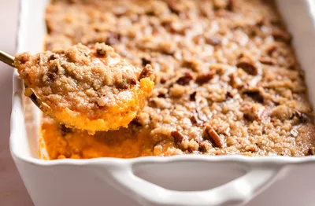

Yummy sweet potato
Slow cooker stuffing
Ingredients
- Sweet potato
- Pecan Topping
Steps
- Cook and mash sweet potato.
- Mix the casserole ingredients and transfer to a baking dish.
- Make the topping and sprinkle it iver the sweet potato mixture.
- Bake until the topping is lightly brown.
This baked sweet potato casserole topped wtih a delicious pecan topping is so good and creamy-my family begs me to make it evry Thanksgivinh and Christmas!